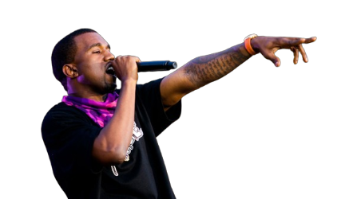

Het verhaal begon in 2013, toen Kanye West Adidas verliet en tekende bij concurrent Nike. Hij had echter ontevredenheid geuit over de samenwerking met Nike en hun beperkte productieaantallen voor zijn schoenenlijn. In 2014 beëindigde Kanye zijn samenwerking met Nike en keerde terug naar Adidas. In februari 2015 werd de eerste Adidas Yeezy Boost-schoen uitgebracht, genaamd de "Yeezy Boost 750." Deze high-top sneaker met een kenmerkende oversized zool werd al snel een cultureel fenomeen en creëerde enorme opwinding in de modewereld.
Na het succes van de eerste release, breidde de Yeezy-lijn zich uit naar verschillende modellen, waaronder de Yeezy Boost 350, Yeezy Boost 950 (een laarsmodel), en kledingcollecties. Kanye West streefde naar innovatie in design en materialen, wat bijdroeg aan het onderscheidende karakter van de Yeezy-producten. Yeezy heeft de manier waarop mensen naar sneakers kijken veranderd. Het merk staat bekend om beperkte releases en exclusiviteit, wat de vraag naar de producten verder vergroot. Het heeft de hypecultuur rondom sneakers en streetwear versterkt en heeft een blijvende invloed gehad op de modewereld.
De Yeezy-lijn blijft evolueren met nieuwe releases en samenwerkingen. Het blijft een krachtig merk in de modewereld, waarbij Kanye West zijn creativiteit en visie blijft uiten via de Yeezy-producten. Het succes van Yeezy kan worden toegeschreven aan het unieke ontwerp, de exclusiviteit van releases en de invloed van Kanye West als mode-icoon. De samenwerking tussen Kanye West en Adidas heeft een aanzienlijke impact gehad op de modewereld en heeft een blijvende erfenis achtergelaten.